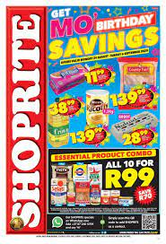
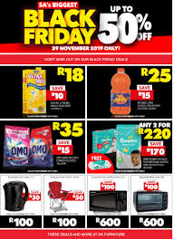

SHOPRITE
The Shoprite Group of companies was established in 1979. In 1990 Shoprite opened in Namibia. In 1991, it acquired the national Checkers chain. In 1995 the first store in Lusaka, Zambia, was opened. That same year they acquired a centralised distribution company Sentra, which had been acting as a central buyer for 550 owner-managed supermarkets, thereby allowing Shoprite to expand into franchising.
In 2008 the Shoprite Group was added to the JSE Top-40 Index of blue-chips. In 2019 Shoprite won the Proudly South African Brand Award and was voted the best in the Grocery Store category as part of the Tiso-Blackstar/Sunday Times Top Brand Survey. [14] Deloitte's Global Powers of Retailing 2019 (covering the 2017 financial year) ranked The Shoprite Group as the 86th largest retailer in the world. [15]In 2011 it was announced that the Shoprite Group entered into an agreement with Metcash Trading Africa (Pty) Limited. Under the terms of that agreement, the franchise division of Metcash was to be sold to Shoprite Checkers, including franchise arrangements with franchisees operating retail stores under registered trademark names such as Friendly and Seven Eleven.
- 8h00am to 19h00pm-MONDAYS
- 8h00am to 19h00pm-TUESDAYS
- 8h00am to 19h00pm-WEDNESDAYS
- 8h00am to 19h00pm-THURSDAYS
- 8h00am to 19h00pm-FRIDAYS
- 8h00am to 19h00pm-SATURDAYS
- 8h00am to 19h00pm-SUNDAYS
WHERE WILL YOU FIND THE STORE
You Will Find Shoprite On The Left Passage As It Is The Last Store Standing In The Middle.
 